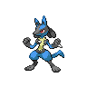

Lucario appears on 32 of 2428 Pokémon Champions VGC tournament teams in the backtwo archive (1% usage, Reg M-C and Reg M-A and Reg M-B). The most common item is Lucarionite Z (81% of Lucario sets) and the most common ability is Inner Focus. Its most frequent teammate is Rillaboom (66% of its teams).
Open Lucario in the full app →| Team | Player | Event | Result | Reg | Date |
|---|---|---|---|---|---|
| Wolfey's Golurk TR Team | Wolfey | Video | — | M-A | 27 May 2026 |
| soulkw's Lopunny Lucario Team | soulkw | Video | — | M-A | 17 May 2026 |
| StrangerDanger's Global Challenge I 2026 10th Place Team | StrangerDanger | Global Challenge I 2026 | 10th | M-A | 4 May 2026 |
| mjpp24o's Global Challenge I 2026 Team | mjpp24o | Global Challenge I 2026 | — | M-A | 5 May 2026 |
| David's Abomasnow Oranguru Team | David Partington | - | — | M-A | 18 Apr 2026 |
| MichaelderBeste's Pyroar Sceptile Team | Michael Kelsch | - | — | M-B | 25 Jun 2026 |
| willbrown_vgc's Baltimore Regional 2027 Top 32 Team | willbrown_vgc | Baltimore Regional 2027 | 28th | M-C | 22 Sep 2026 |
| anrivgc's Baltimore Regional 2027 Team | anrivgc | Baltimore Regional 2027 | — | M-C | 21 Sep 2026 |
| jt_speed's Baltimore Regional 2027 Team | jt_speed | Baltimore Regional 2027 | — | M-C | 21 Sep 2026 |
| Tom te Boekhorst's VR September Challenge #2 Top 16 Team | Tom te Boekhorst | VR September Challenge #2 | 11th | M-C | 20 Sep 2026 |
| spy_anya11's Lucario-Z Gengar Team | spy_anya11 | - | — | M-C | 19 Sep 2026 |
| Viera's Absol-Z Lucario-Z Team | Shoma Honami | Video | — | M-C | 16 Sep 2026 |
Showing 12 of 32 teams. See all 32 in the full app →
Already running Lucario and want the rest of the six? The team finder takes the Pokémon you have and ranks every tournament team by how many of your picks it matches. Or run the numbers in the damage calculator — Champions-accurate, with Mega Evolution, Stat Points, weather, terrain and spread reduction.